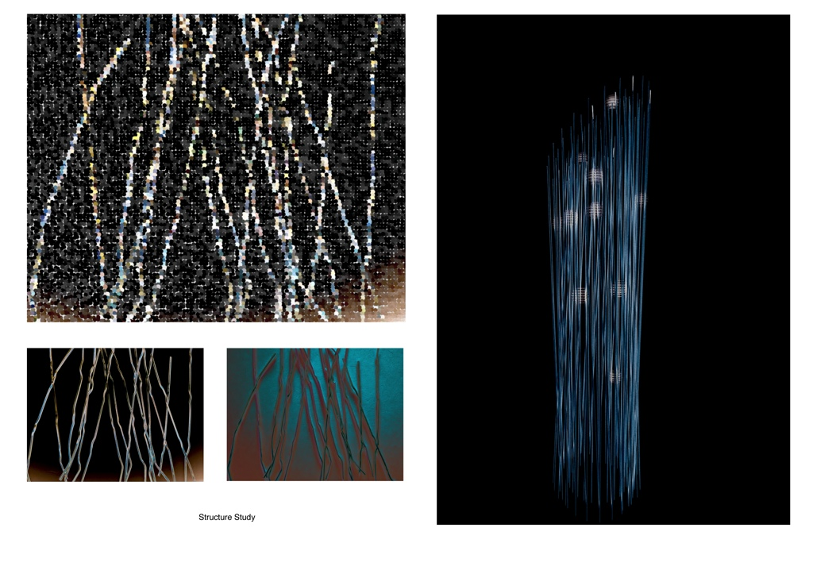
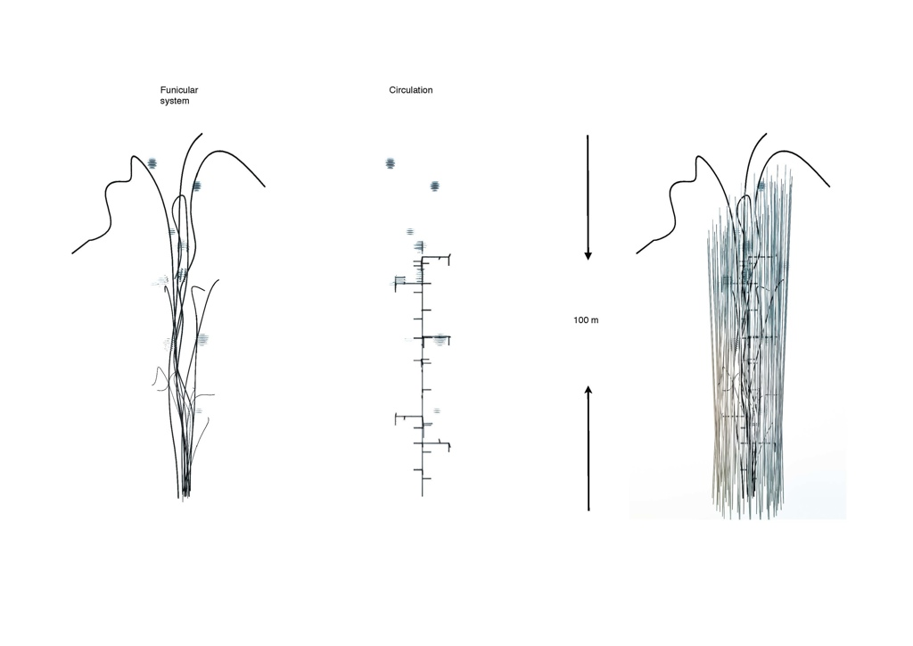
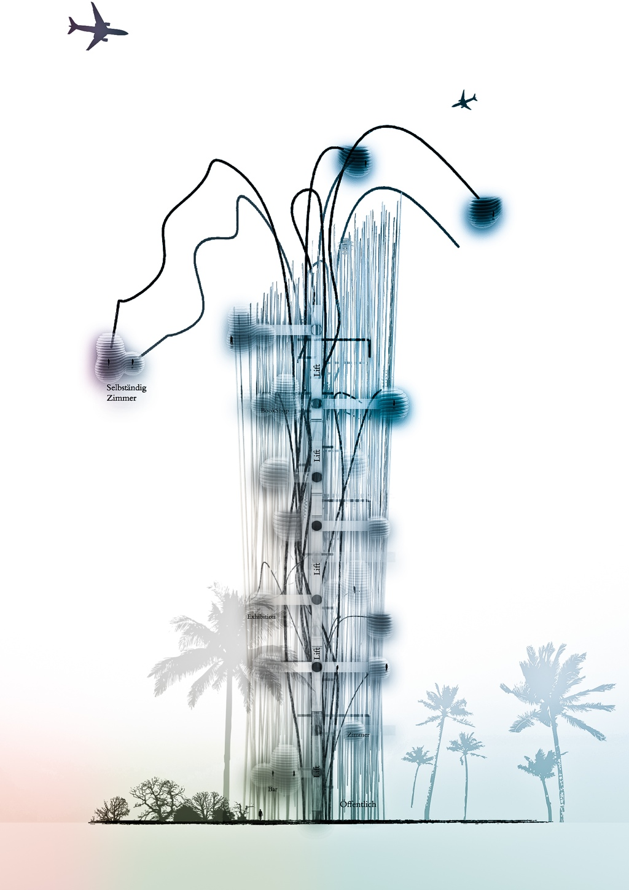
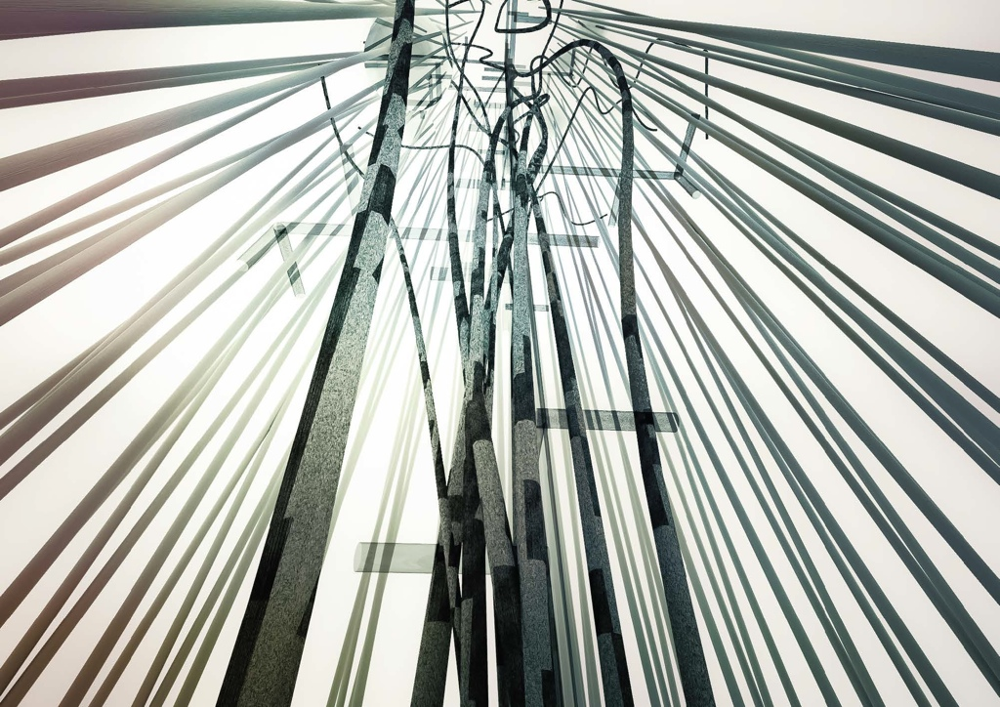

The idea is to create a 100m aircraft-observing tower near the airport and military base.It consists of cafe, bookshop and exhibition of aircraft models.
Observing rooms are the emphasis of the project.
Rooms are supported by the structures and linked by the Funicular system. So that some rooms are able to move up and down according to gravity and wind-speed. They were shaped like a spherical glasshouse to provide 360 degree view. The curved glass facade also acting as a magnifying glass to enable detailed view of plane passing by during landing and taking off.